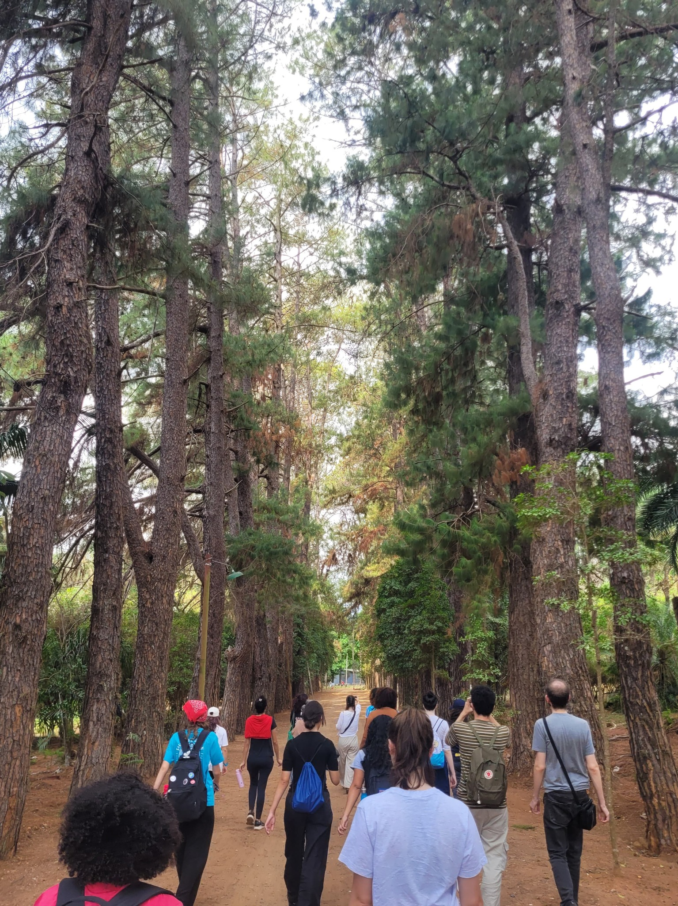
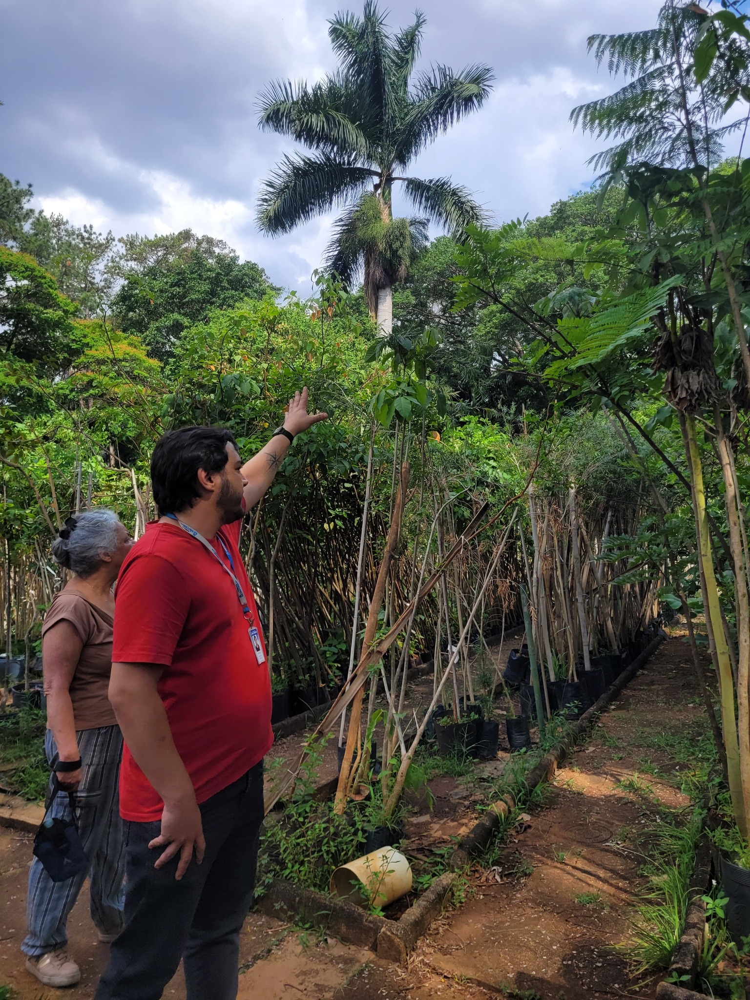
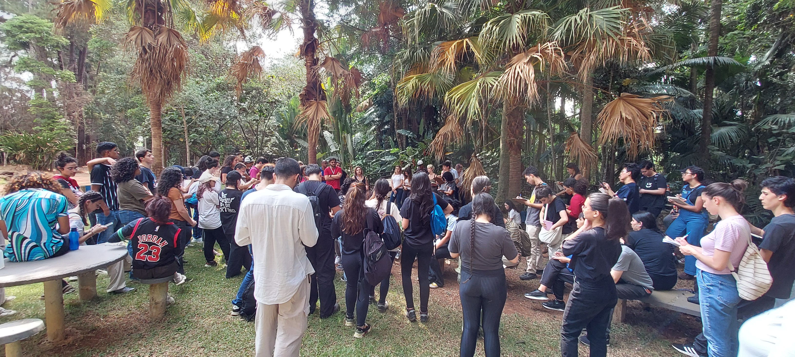
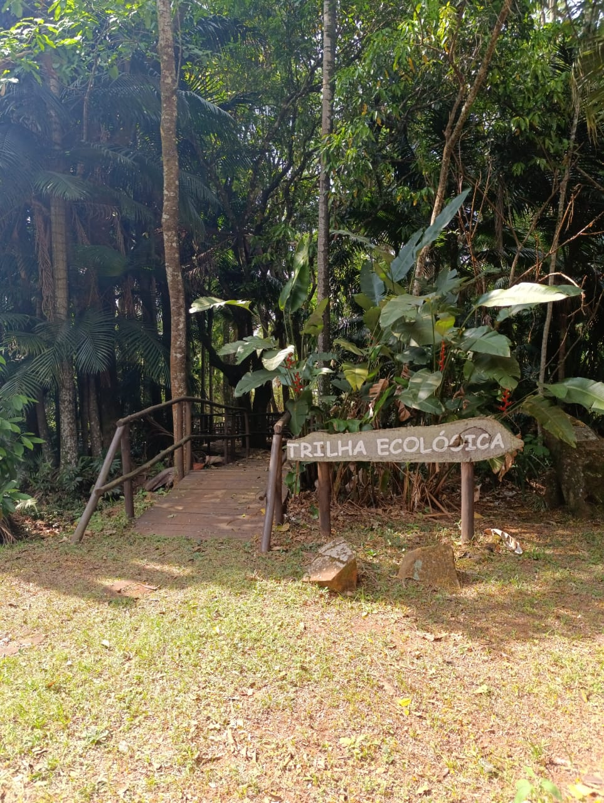

1. Introdução
Durante a visita de campo realizada pela Universidade de São Paulo ao Horto Florestal de São Carlos, identificaram-se fragilidades na gestão pública ambiental, especialmente relacionadas às condições de trabalho e à falta de integração de dados.

Este relatório apresenta uma análise crítica dos problemas enfrentados pelo Horto, discute suas conexões com teorias acadêmicas e propõe intervenções para promover uma gestão mais eficiente e sustentável.
2. Análise Crítica do Caso
O Horto Municipal de São Carlos é uma área de 24 hectares destinada à preservação ambiental, educação, lazer e pesquisa científica. No entanto, enfrenta os seguintes desafios:
Condições de Empregabilidade
Os funcionários do Horto relataram sobrecarga de trabalho e falta de estabilidade. Muitos são remanejados para funções diferentes de suas qualificações originais, como deslocamentos de áreas administrativas para atividades ambientais sem treinamento adequado. Essa prática é reflexo das dificuldades enfrentadas pelo setor público ambiental, que sofre com a falta de pessoal qualificado e com a precarização das relações de trabalho. Além disso, os servidores relataram desvio de função, indicando que cargos administrativos são frequentemente designados para atividades de campo devido à formação dos funcionários, mas sem suporte ou capacitação.
Essas questões refletem um problema maior no serviço público ambiental: a adoção de modelos de gestão baseados em práticas do setor privado, que priorizam a flexibilização e intensificação do trabalho, comprometendo a estabilidade associada ao setor público (Souza; Moulin, 2014).
Integração e Transparência de Dados
A ausência de monitoramento e sistematização de dados ambientais representa um dos principais desafios para a gestão do Horto. Atualmente, os dados utilizados provêm majoritariamente de universidades locais, como a Universidade Federal de São Carlos, evidenciando a dependência de instituições externas e a falta de uma plataforma própria para coleta, armazenamento e compartilhamento de informações. Durante a viagem de campo, os funcionários do Horto demonstraram confusão ao serem questionados sobre dados específicos, revelando a necessidade de um sistema eficiente de dados ambientais para facilitar o planejamento e a gestão.
Essa limitação compromete a capacidade de enfrentar desafios socioambientais e de tomar decisões fundamentadas, além de dificultar a integração com outras unidades e setores. Segundo Assis et al. (2012), a falta de integração e acesso eficiente a sistemas de informação é um obstáculo significativo para a formulação e implementação de políticas ambientais eficazes.
A dependência de universidades destaca a importância do envolvimento acadêmico na área ambiental, mas também reforça a necessidade de o Horto ter autonomia em relação à gestão e aos dados ambientais. Além disso, há uma falha na gestão pública em capacitar adequadamente os profissionais para cargos ambientais específicos, comprometendo tanto o desempenho das atividades diárias quanto a recepção de visitas e instituições, como universidades.
3. Relação com as Aulas
O Horto Florestal de São Carlos possui boas iniciativas, começando por manter o espaço aberto para visitação monitorada, pesquisas científicas, lazer e educação ambiental. Entretanto, apresenta alguns problemas, dos quais destaca-se, no seguinte trabalho, a defasagem da empregabilidade e da disponibilidade e integração dos dados. Pode-se pensar em diversas teorias para que tais problemáticas ocorram. Quando perguntado aos funcionários públicos que cuidaram da monitoria do horto na visita dos alunos, eles apontaram várias vezes que há na cidade um embate entre as questões ambientais e o setor imobiliário, sendo esse o lado com maior influência na região.
Segundo Moraes (1994), bibliografia referente à segunda aula do semestre de gestão ambiental, a órbita estatal, ou seja, o setor público, age como um instrumento direto em disputas dos cenários políticos. Entretanto, os governos e gestões podem pender para lados dominantes de uma disputa e favorecê-los. Por essa razão, em nosso debate durante a viagem de campo, foi conjecturado que a defasagem dos recursos, dos dados e do pessoal disponível para a divisão ambiental da prefeitura de São Carlos se dá por uma valorização dos interesses imobiliários que, segundo os próprios servidores, causam muita pressão nas decisões políticas do uso do espaço. Logo, como os interesses de ocupação do solo são conflitantes, as decisões tendem a ser tomadas a favor do setor com maior influência e maior poder, fazendo com que o outro lado sofra com o sucateamento, já que, segundo o autor mencionado no início do parágrafo, “Um adequado planejamento ambiental mexe com muitos interesses, sendo estruturalmente um potencializador de conflitos”.
Agra Filho (2010) também traz a visão exposta acima e acrescenta que as problemáticas ambientais iniciam-se devido às demandas conflitantes dos recursos ambientais pela sociedade, no caso exposto, como será a ocupação de terras. A ocupação imobiliária está atrelada à noção de desenvolvimento da cidade, bem como o desenvolvimento traz a ideia de crescimento de riqueza para a região. Isso serve de justificativa para a interação que a cidade germina com os sistemas ambientais locais e os impactos gerados por eles, com foco para a defasagem do setor público ambiental.
Existem diferentes modelos de desenvolvimento e cada região adota um tipo baseado em seus padrões de produção e consumo (Agra Filho, 2010), mas muitas vezes o ambiental é deixado de lado em detrimento do desenvolvimento, como podemos observar em São Carlos. Embora existam outras opções de desenvolvimento em que a sustentabilidade está mais presente, como o desenvolvimento sustentável e o ambientalismo moderado (Jatobá; Cidade, 2009) que foi estudado na quinta aula do semestre de gestão ambiental.
Também foi debatido em sala de aula a questão da importância dos dados, da sua integração e transparência para o bom funcionamento do setor público ambiental, temática abordada nos textos de Guerreiro, Vasconcelos e Condurú (2021) e de Ramos (1997). A partir deles, é possível perceber que a integração dos dados para a gestão pública é de suma importância para que um melhor desenvolvimento ocorra. Sem essa integração, os funcionários e o sistema público ficam desamparados, como foi possível observar no Horto Florestal de São Carlos.
O problema de deixar as questões ambientais de lado é que começará uma cadeia de acontecimentos iniciando com o sucateamento dos órgãos públicos e a precarização da empregabilidade do setor público e dos dados da região acerca desse tema, havendo cada vez menos autonomia e integração. Então, mais impactos acontecerão comprometendo a disponibilidade e a qualidade dos recursos ambientais (Agra Filho, 2010). Problemáticas assim deveriam ser tratadas de modo multidisciplinar (Moraes, 1994), uma vez que envolvem questões econômicas, sociais e ambientais e precisam de um aprofundamento e especialidade em cada uma das áreas.
4. Propostas de Intervenção
Melhorias na Empregabilidade
A gestão ambiental eficaz depende diretamente da valorização e qualificação dos profissionais envolvidos. No caso do Horto Florestal de São Carlos, há ações importantes que podem ser tomadas para aprimorar a empregabilidade e a satisfação dos trabalhadores.
- Revisar condições salariais e garantir estabilidade contratual: Muitos profissionais do setor ambiental enfrentam instabilidade em suas carreiras, o que compromete o desempenho e a motivação. Garantir salários adequados e contratos mais estáveis não só melhora a qualidade de vida dos trabalhadores, mas também fortalece o comprometimento deles com os objetivos da instituição.
- Capacitar os profissionais para funções específicas: A gestão de um espaço como o Horto Florestal requer habilidades especializadas, como manejo de viveiros, monitoramento ambiental e gestão de projetos educativos. Programas regulares de capacitação e treinamentos contínuos podem aumentar significativamente a eficiência e a qualidade das atividades realizadas.
- Ampliar o quadro de funcionários: A sobrecarga de trabalho é um dos principais desafios enfrentados pelas equipes de gestão ambiental. Contratar mais profissionais, especialmente em áreas técnicas e operacionais, pode reduzir essa sobrecarga, permitindo que as tarefas sejam realizadas com maior precisão e dedicação.
Implementação de Sistemas de Dados
A coleta e análise de dados ambientais são fundamentais para o planejamento e a tomada de decisões estratégicas em espaços de preservação. No entanto, para que isso seja eficaz, é necessária a adoção de tecnologias modernas e a integração das informações entre diferentes instituições.
- Desenvolver uma plataforma própria para coleta, armazenamento e análise de dados ambientais: Uma plataforma digital que centralize todas as informações geradas pelo Horto Florestal permitirá não apenas uma melhor organização, mas também maior eficiência no monitoramento de indicadores ambientais, como qualidade do ar, estado das espécies vegetais e níveis de biodiversidade.
- Integrar os dados gerados com outras instituições: A parceria com universidades e institutos de pesquisa é essencial para ampliar o alcance e a utilidade dos dados gerados. Compartilhar informações com essas entidades promove o desenvolvimento de novos estudos, projetos de restauração e políticas públicas.
- Garantir transparência e acessibilidade: A transparência na gestão ambiental é uma demanda crescente da sociedade. Garantir que as informações coletadas estejam acessíveis para consulta pública e para órgãos de fiscalização aumenta a confiança na gestão e estimula a participação da sociedade civil.
Sugestão de protótipo de integração de dados
Promoção de Sustentabilidade
A sustentabilidade deve ser a base de todas as ações realizadas em um espaço como o Horto Florestal, priorizando um equilíbrio entre o crescimento econômico, a conservação ambiental e o bem-estar social.
- Adotar modelos de desenvolvimento sustentável: Modelos que integrem preservação e uso racional dos recursos naturais podem garantir que o Horto Florestal continue a desempenhar seu papel na conservação da biodiversidade, ao mesmo tempo em que contribui para o desenvolvimento socioeconômico da região. Exemplos incluem o uso de energia renovável, práticas de economia circular e programas de reflorestamento sustentável.
- Fortalecer parcerias com a sociedade civil e ONGs: A colaboração com organizações não governamentais e a sociedade civil amplia o impacto das ações do Horto, permitindo a realização de campanhas de educação ambiental, programas de conscientização e iniciativas de restauração ecológica em maior escala.
5. Conclusão
O Horto Florestal de São Carlos exemplifica os desafios da gestão pública ambiental no Brasil. Investir em melhores condições de trabalho, integração de dados e desenvolvimento sustentável é essencial para assegurar a preservação ambiental e promover qualidade de vida.
Também queremos agradecer o
6. Agradecimentos
Queremos agradecer a professora Flavia Cristina da Silva por nos proporcionar o privilégio de vivenciar a viagem de campo e por nos ensinar tanto em sala de aula quanto fora dela. Desejamos muito sucesso em sua vida e esperemos que continue ensinando para outras pessoas terem o privilégio de ter uma ótima professora como nós tivemos.
Também queremos agradecer as monitoras Alexandra Penhalver Netto, Emeli Malveira Silva Chaves, Giuliana Miranda dos Santo, Ingrid da Silva Oliveira, e os professores Leonardo Dias Meireles e Thiago P Santos por nos acompanhar nas aula e na viagem de campo.
Por fim, queremos agradecer o Horto Florestal de São Carlos e seus funcionários por ter nos recebido e ter sanado nossas dúvidas.
7. Referências Bibliográficas
- AGRA FILHO, Severino Soares. Conflitos ambientais e os instrumentos da política nacional de meio ambiente. Desenvolvimento e conflitos ambientais. Belo Horizonte: Editora UFMG, p. 351-359, 2010. Disponível em: https://www.unisantos.br/mestrado/gestao/egesta/artigos/149.pdf. Acesso em: 22 nov. 2024.
- ASSIS, Marcelo Prudente de; MALHEIROS, Tadeu Fabrício; FERNANDES, Valdir; PHILIPPI JR, Arlindo. Avaliação de Políticas Ambientais: desafios e perspectivas. Saúde e Sociedade, v. 21, supl. 3, dez. 2012. Disponível em: https://doi.org/10.1590/S0104-12902012000700002. Acesso em: 20 nov. 2024.
- GUERREIRO, Irene Costa Freitas; VASCONCELLOS, Mário; CONDURÚ, Marise Teles. Transparência ambiental: da disponibilidade ao acesso à informação ambiental. Perspectivas em Ciência da Informação, v. 26, n. 04, p. 3-37, 2021. Disponível em: https://www.scielo.br/j/pci/a/fhQJmjnWggZWynGxSXYd9Qw/. Acesso em: 24 nov. 2024.
- JATOBÁ, Sérgio Ulisses Silva; CIDADE, Lúcia Cony Faria; VARGAS, Glória Maria. Ecologismo, ambientalismo e ecologia política: diferentes visões da sustentabilidade e do território. Sociedade e estado, v. 24, p. 47-87, 2009. Disponível em: https://www.scielo.br/j/se/a/CSrVxYphhYvHrgcZgRNF8WF/?format=pdf&lang=pt. Acesso em: 24 nov. 2024.
- MORAES, Antonio Carlos Roberto. Meio Ambiente e Ciências Humanas. São Paulo: Hucitec, 1994, pp. 1-34. Disponível em: https://books.google.com.br. Acesso em: 22 nov. 2024.
- QUINTAS, José Silva. Educação no processo de gestão ambiental pública: a construção do ato pedagógico. In: LOUREIRO, C. F. B.; LAYRARGUES, P. P.; CASTRO, R. S. (orgs.). Repensar a educação ambiental: um olhar crítico. Rio de Janeiro: Cortez, 2009. Disponível em: https://sigam.ambiente.sp.gov.br. Acesso em: 19 nov. 2024.
- RAMOS, Tomás B. Sistemas de indicadores e índices ambientais. In: Congresso Nacional dos Engenheiros do Ambiente. 1997. p. 433-443. Disponível em: https://www.academia.edu. Acesso em: 24 nov. 2024.
- SÃO CARLOS. Horto Florestal Municipal. 2007. Disponível em: http://www.saocarlos.sp.gov.br. Acesso em: 22 nov. 2024.
- SOUZA, Sheila Ataíde Domingues de; MOULIN, Maria das Graças Barbosa. Serviço público: significados e sentidos de um trabalho em mutação. Cadernos de Psicologia Social do Trabalho, v. 17, n. 1, p. 49-65, 2014. Disponível em: https://doi.org/10.11606/issn.1981-0490.v17i1p49-65. Acesso em: 20 nov. 2024.